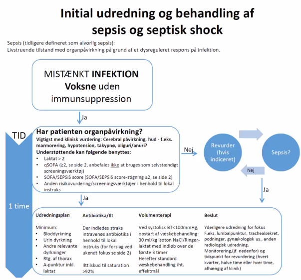
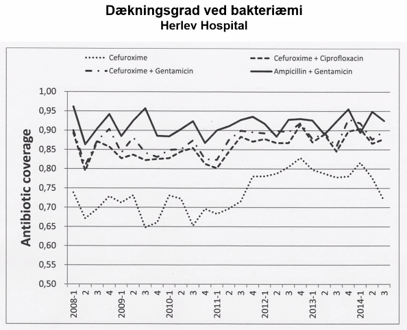
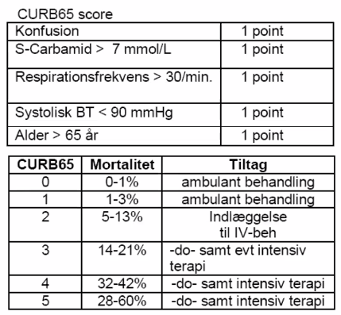
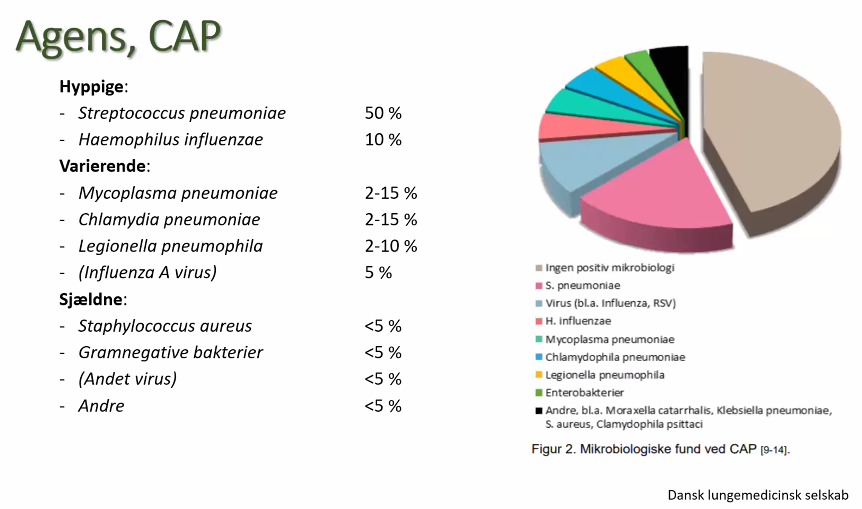

Infektion
Godmorgen
- Søborg er overlæge opå infmed
- Christina er overlæge på intensiv
- Det er første gang de underviser på ZOOM
- De har 4 cases som er ret pædagogiske.
Vejledninger og læsestof
- Infektionsmedicinsk hjemmeside: http://www.infmed.dk/
- Sepsis guidelines
- Spondylodiscitis osv., meningitis og andre større infektionssygdommme.
- Regionale antibiotika vejledning region hovedstaden
- Kan fås som APP på telefon. Kan også vise skemaer mht nedsat nyrefunktion
- Yellow book CDC, SSI rejsevejledning.
- Udlandsrejser.
- Overblik hvor malaria er osv.
CASE 1.
- 67 årig kvinde indlægges på kirurgisk afdeling med abdominalsmerter.
- 2 dages feber og obstipation.
- Objektivt:
- A: Normal tale
- B: RF 30. SATO2 95% uden 02
- C: BT 80/60 mmHg Puls 128
- D: Vågen og klar
- E: Tp 38,5.
- Fortolkning: Det er ikke for godt
- Mest sandsynlige diagnose: Urosepsis
- qSOFA: 2 af 3 points.
- Mange der har dette
- Alternativt: Diverticulit
- Har obstipation + abdominalsmerter
- Søborg: Godt at have flere muligher oppe og vender, og ikke fastholde diagnose.
- Hvilke tanker gør man sig på/nede ved patienten?
- C-problem:
- Sepsis / infektion: Hurtig opstart af behandling.
- Hvad vil du sige til sygeplejeske i telefonen?
- Giv ilt?
- SAT 95% er okay i princippet
- IV-adgang eller to
- Så er de klar til væske
- Blodprøver og venyler
- A-gas
- Giv ilt?
- Blodprøver
- Leukocytter 18 ( neutrofil overvægt )
- CRP 320
- Kreatinin 176
- A-pkt:
- ph 7,35. PO2 10. PCO2 3,4. Laktat 5. BE: -6.
- Fortolkning:
- Leukocytose, netrofile. CRP => infektion?
- Kreatinin => nyrepåvirkning?
- A-pkt: Metabolisk acidose, fuldt resp kompenseret.
- Laktatacidose => hypoperfunderet
- 16-06-2020 08:32 (abscence..)
Hvad siger man helt konkret til sygeplejesken
- Læg to store IV-adgange/PVK
- Giv 500 ml ringer el. NaCl (efter lokal)
- Tag venyler
- Fokusjagt
- Urinundersøgelser
- Trakealsugning
- Rtg thorax.
- Venyler
- Afføring til tarmpatogene?
- Podning fra hud?
- Start pip/tazo 4g eller andet bredspektret AB.
- evt. metronidazol ved mave?
- Observationsplan
- Vitale værdier hvert 15 min
- Ny a-pkt om 2 timer?
- Læg et KAD.
- Mål timediurese
- Lugt og kig på urinen
- Hvis det er pus der kommer ud, så er det nok fokus.
Case forsat
- Hvad med kreatinin?
- Nyrepåvirkning? Formentlig prerenalt, så skulle det hjælp med rehydrering.
- Hvor længe har hun har prerenalt svigt?
- CRP er høj
- CRP har 24 timers forsinkelse
- Kreatinin..
- Det tager lidt tid at komme op på kreatinin 176 hvis normalt ellers.
- CRP er høj
- Anamnese
- Organspecifikke klager
- Fokus?
- Disponeret
- Immunsup, medicin
- Eksponeret
- Rejse?, mad?
- Vaccinationer / profylakse / medicin
- Glemt at tage medicin?
- Været syg el. indlagt i udlandet.
- Andre syge i omgangskreds.
- tidl. operationer
- Gynækolgisk anamnese
- Væske/fødeindtag
- mht nyrepåvirkning
- Opkastninger
- Afføring
- været i kontakt med egen læge inden indlæggelse?
- Opstartet AB?
- Smertestillende?
- Organspecifikke klager
Yderligere behandling - efter breakout
- Antibiotika
- Udrede om det er abdominalkatastrofe?
- Konf. kirurg.
- Og de anbefaler et CT-abdomen.
- Konf. kirurg.
- EKG.
- Rektal eksploration
- Ekstra blodprøve:
- Type og BAS-test
- Hvis hun nu lige bløder lidt.
- Hvornår skal pt rette sig?
- ?? 16-06-2020 09:02
Take home message + Diagnosen
- CT-skanning viser hun har en abcess fra diverticulit, bliver OP under AB-dække
- Ligger kortvarigt på intensiv.
- 16-06-2020 09:05
- Bliver udskrevet 5 dage senere
- Pointen: Febril, men ikke nok med AB og Væske. Man skal finde fokus og sanere dette
- Fokus skal fjernes idet dette var en ABCESS som skulle fjernes for ellers dør patienten.
ABCDE-principperne
- A: Fremmedelegeme, tungetilbagefald, ødem, blod, sekret, opkast.
- B: Farver, thorax bevægelser, resp.lyde, RF, SATO2, Stetoskopi, perkussion, A-pkt.
- C: Farver, kapillær respons, P, BT, EKG.
- D: GCS, pupiller, pareser, BS, Medicin
- E: Tp, læsioner, farver, blødning.
A - Airway
- årsager
- Stridor: inflammation el. fremmedlegeme i øvre luftveje
- Sekret: fra infektion
- Blod: Blødning
- Snorken,
- A behandling
- Kæbeløft
- Det hjælper for det meste
- Bevidsthedspåvirkning - morfika?
- Nasal airway
- Risiko: blødning, septumhæmatom, op i hjernen.
- Tungeholder - DEN BRUGER VI IKKE!
- medmindre pt ikke har dybe reflekser
- pt kan kaste op.
- Kæbeløft
B - breathing
- Årsager
- Takypnø
- Bronkokonstriktion (KOL, astma)
- Lungeødem
- Infektion?
- Pneumothorax
- Usymmetrisk
- Perkussion
C - Circulation
- Farve - cyanose
- Klamme / kolde
- Hvorfor?
- Iltmangel giver sved?
- Adrenalin giver vasokonstriktion for holde blod centralt.
- Hvorfor?
- Kappilærrespons..
- St. C.
- C behandling
- Det kan være en god ting at måle tryk på den anden arm hvis det ikke helt passer.
- Hvad er et godt mål for at patienten er/har været velperfunderet
- Laktat.
- Diureser
Første time slut
Ny Sepsis score
- SIRS er død (RF, leuko, TP, Puls)
- 1991 GOMSAT (Good old man sat around a table)
- SIRS kriterier negative i op til 20%
- Inaccurate, confusing and outdated”

Godt at være lidt bekendt med dette flowchart. Ligger på infmed.dk
- Points
- Konfusion er vigtigt
- Temperatur indgår ikke!!!
- Væsketerapi kun hvis patienten retter sig på det
- Hvis hæmodynamisk påvirkning, kontakt intensiv
- Store mængder væske ?! noget med dette 16-06-2020 09:19
- Christina kommenterer på deres oplevelser med de nye retningslinger 16-06-2020 09:20
qSOFA
- Systolisk BT < 100 mmHg
- Respirationsfrekvens > 22/min
- Ændret mentalstatus
Skal der være mistanke om infektion?
Forslag til indledende antibiotisk behandling ved ukendt fokus
- Sepsis:
- Ampicillin 2 g hver 6. time iv + gentamicin 5 mg/kg hver 24. time iv - dog max 500 mg
- Metronidazol 500 mg hver 8. time iv. kan evt. tillægges
- Eller
- Piperacillin/tazobactam 41b/0,5 g hver 6. time iv.
- Ved penicillinallergi erstattes ampicillin eller piperacillin/tazobactam med cefuroxim 1,5 g hver 8. time iv. Husk at opstarte gentamicin, hvis patienten ikke får dette i forvejen.
- Ampicillin 2 g hver 6. time iv + gentamicin 5 mg/kg hver 24. time iv - dog max 500 mg
- Septisk shock:
- Piperacillin/tazobactam 4,0/0,5 g hver 6. time iv.
- Ved pencillinallergi: Meropenem 2 g hver 8. time iv.
Kommentarer
- Gentamicin er godt til at fjerne bakterier.

Spørgsmål + kommentarer.
- Patienter der ikke retter sig på væskebehandling indenfor 1 time, er i septisk shock.
- Septisk shock: forsat organpåvirkning trods relevant behandling
- Så har man brug for vasopressor. Ring til intensiv.
- Så sepsis skal observeres tæt første par døgn.
- Hvornår bruger man SOFA istedet for qSOFA
- SOFA bruges på intensiv.
- SOFA = vurdering af enkelt organ. Intensiv bruger den dagligt på deres patienter. Men det er ikke noget vi skal tænke på. SOFA er meget omfattende. Man bruger ikke enkelte tal, men udviklingen i tal.
- Modificeret SOFA-score?
- Øøøøææææh. Det bruger vi ikke så meget..
- Det svære at få sepsismistanken. Når man ved det, så skal man bare følge retningslinjen. MAn skal holde sin vurdering åben. Kunne denne pt have en tidlig sepsistilstand?
- Gentamicin + kronisk nyrepåvirkning?
- Så vil man ikke bruge Genta, så er det tazocin i reducerede doser.
Case 2
- 50 årig mand tidl rask, tidl. ryger indlægges under diagnose pneumoni. Igennem 4 dage tiltagende hoste og febrillia. Set af EL for 2 dage siden og opstartet penicillin. Nu åndenød hvorfor han indlægges.
- A: normal tale
- B: RF 28 Sat 88 uden ilt
- C: BT 140/80 P 100
- D: Vågen klar
- E: TP 37,5 intet udslæt.
- Fortolkning:
- Lav sat? KOL? Kronisk lav SAT?
- Så lidt ilt.
- C: Fint BT. Lidt høj puls?
- Temp: OK.
- KLAR B-PROBLEM.
- Lav sat? KOL? Kronisk lav SAT?
- Poll. Diagnose
- Tuberkulose
- Klassiske billede ved TB:
- Længere tid, nattesved, blodig ekspektorat, kronisk påvirkning.
- Livsstilfaktorer. Cluster blandt KBH-hjemløse + Grønland.
- Hvis det er en tuberkulosesuspekt => ISOLATION!
- Klassiske billede ved TB:
- Covid
- Kunne være en diff diagnose for tiden. Men relativt usandsynligt. Men skal vel podes anyway.
- Pneumokok
- Hyppigste samf. erhv.
- Akutte forløb.
- Taler imod:
- KOL ville typisk være M. cattharalis + H. influenzae
- Pneumokokker burde være følsomme for pencillin
- 10% måske resistente
- Burde respondere hurtigt på pencillin.
- Plejer at være højfebrile.
- Taget pencillin?
- For befolkningen betyder pencillin antibiotika. Er det præcis pencillin. Hvad står der på æsken, fister? Kig på FMK.
- Legionella
- Mycoplasme
- Manglende effekt af pencillin.
- Tuberkulose
- Biokemi
- Leukocyt 9/ 6 neutrofile,
- CRP 270,
- Natrium 120 mmol/l,
- ALAT 300
- Breakout:
- CRB-65
- A-gas.
- Fokus
- Trakealsugning
- Dyrkning
- PCR for atypiske
- Man kan pode for klamydia + mycoplasma
- Legionella skal laves på trakelsekret
- Tuberkulose undersøgelse?
- Podes for influenza.
- Lungecancer? SCLC.
- Hyponatriæmi?
- Cancer? Levercirrose?
- Rtg cancer.
- Leverpåvirkning? Alkoholanamnese.
- Flere levertal, hepatit-prøver
- Rejse + sex + anamnese
- CT-skanning.
- Legionella
- ALAT + Lav leukocytter + hyponatriæmi.
- Hyponatriæmi vil rette sig på antibiotisk behandling.
- Aircondition, spabade, vand.
- Mere "slem" af de atypiske.
- Makrolider + eksatr.. slutningen af 2. time. 16-06-2020 10:01
Scoreing af alvorlighed af penumoni
- CURB-65 skore

- Man kan undlade Urea hvis man er i almen praksis eller ikke lige har den
Diagnostik - Pneumoni
- Ekspektorat, tracheal sug extremt vigtigt!!
- Rtg kan ikke bruges til noget mht infektiøs agens.

- Husk brug CURB-65.
- Tillæg claritrhomycin hvis CURB > 3.
- Gennemdykrning
- LUT og PUT er ikke så gode...
Take home
- Pneumoni er ikke bare pneumoni
- Målret behandling til agens *
Case 3
- 16 årig mand indlægges akut indlægges via lægeambulance. Da lægeambulancen ankommer er han cyanotisk kold og klamt. Han er motorisk urolig og uklar. Der er udslæt på kroppen der pibler frem under undersøgelse. Meget varm, ikke sikkert NRS.
- A: Taler frit
- B: Saturation 83%
- C: BT 150/40 P 150
- D: GCS 10
- E udslæt mest deklivt på UE
- Fortolkning:
- B: hudson maske med godt med ilt.
- C: Højt tryk alligevel, systolisk på 40?!. høj puls. Unge mennesker kan kompensere as f..k.
- Han kan vælte PLUDSELIG. De kompenserer langt hen ad vejen.
- MAX STIMULERET ADRENALIN.
- D: påvirket
- E: UDslæt!
Poll.
- Hæmatologisk sygdom
- Akut leukemi?
- Meningokok meningitis
- 99% valgte dette!
- Der er et par points her.
- Vaskulit
- Hennloch-schonlein..
- Cerebral aneurisme blødning
- Malaria
Hvordan forbereder man sig når de ringer fra lægeambulancen
- Man kalder HJÆÆÆÆLP før ankomst.
- Givet antiobiotika og steorid i lægeabulance?
- Hvis NEJ, så kom I gang (sløve padder!)
- bagvagt / anæstesi / intensiv adviseret og klar.
- ISOLATION iklædt (meningokokker)
- Medicin på stuen, evt. trukket op.
- Væsketerapi klar.
- Steorid
- Dexamethason
- antibiotika (hvis ikke givet af akutlæge)
- Ampi / Genta?
- Man tjekker lige vejl. og doser.
- Pencillinallergiker?
- Lumbalpunktur
- Det kan vente lidt evt.
- Klar til venyler, lumbalpunktur.
- DIC'er han? "Udslæt pipler frem"
- Skal han have noget for det? *
Antiobiotiak vejl.
Pro.medicin.dk / meningtis * På skadested / uden for hospital * Benzylpenicillin * 3 g (5 mill. IE) i.v. opløst i 25 ml sterilt vand. * 3g Benzylpenicillin i.v. præhospitalt! * Kan også give i.m. opløst i lidokain.
- i ALMEN 16-06-2020 10:52. Det er et krav at man som almen læge kan give i.m/i.v. benzylpencillin 3g på skadested.
- 1813 sender en lægeambulance hvis man mistænker meningit.
MENINGIT ANTIBIOTIKA (SKAL MAN KUNNE MED DOSIS)!
- Dexamethason 10 mg IV x 4
- efterfulgt af
- Ceftriaxon 4 g IV x 1
- i kombination med
- Benzylpenicillin 1,8 g (3 mill. IE) IV x 6.
- Penicillin kan udelades hos patienter < 50 år og uden risikofaktorer for Listeria monocytogenes i form af immunosuppressiv behandling, diabetes, cancer eller graviditet.
- VED pencillinallergi: Meropenem
- Dexamethason skal gives først fordi der kommer inflammation når baktusserne lyseres først. Hvordan kan lumbalpunktur ikke forsinke behandlingen? 30 min er ikke forsinkelse.
- Lumbalpunktur kan vise pleocytose. Man kan måske godt se bakterier i mikroskop hvis man har givet AB før lumbalpunktur.
Kontraindikationer for lumbalpunktur
- Fohøjet ICP
- Fokale udfald, kramper
- Infektion ved indstiksstedet - jaja, det var ikke så vigtigt.
- Blødningsrisiko? Blodfortyndende
- DEt skal man være ligeglad.
- forsvinende lille risiko.
Spørgsmål
16-06-2020 10:58 og fem min før - absence. Dans benzylpencillin-skyder (5mio IE) sidder løst når han kører med akutbilen.
Isolation
De kan tages ud af isolation hvis det ikke er meningokok eller efter 24 timers behandling. Det er fandme ikke akut-pensum hvordan de små lorte bakterier ser ud i mikroskop..
Case 3 forsat
Pt. bliver nu mere cerebralt påvirket GCS 8 . Hvad skal der gøres og på hvilken afd skal pt. monitoreres de første døgn?
- Intubation + sederes
- Intensiv, adviser dem tidligt hvis patienten ikke ligger der allerede.
Slut 3. time
Case 3 - opsummering
- Bakteriel Meningitis hyperakut.
- Husk isolation.
- Altid på enestue
- Alt personale har allerede isolationsudstyr på ved pts ankomst.
- Første AB. Indenfor 30 min. Efter bloddyrkning.
- LB
- kontraindikation ved fokale neurologiske udfald
- Anamnese-anamnese-anamnese.
- Pårørende? Hvor hurtigt udvikling? Traumer?
- Profylakse?
- Tætte kontakter, kun ved meningokok
- Det er STPS der bestemmer hvem der skal have profylakse
- noget med at sove under samme tag.
- Anmeldes STPS
- Snakker noget om lumbalpunktur på ikke så syge: 16-06-2020 11:26
- Så kan man som ungrotte få lov at lære at lumbalpunkturere
- Så er det lidt trygt.
- Hvorfor både ceftriaxon og benzylpencillin
- Benzylpenicillin dækker Listeria - uuhu, det er så smuuukt
Case 4
- 68 årig mand indlægges bevidsthedssvækket med kulderystelser.
- Anamnese:
- 2 dages smerter i ve. Flanke.
- I øvrigt rask.
- Obj.:
- A: Svarer på tiltale.
- B: RF 30. SAT O2 92% uden O2. RF 30.
- C: BT 100/40 mmHg. Puls 110. Kold på hænder og fødder.
- D: Ikke relevant. Afværger, åbner øjne på tiltale. TP 35,2.
- Spørgmål
- I afstemningen var meningitis ikke en mulighed, men ja, det er anamnesen med flankesmerter der gør at Pyelonefrit er mere sandsynligt.
- Gennemgang
- B: Lidt ilt til SAT'en
- C: BT er lav. Præshocket? Hypoperfunderet. (Juuhuu, bagvagt, jeg har en dårlig patient)
- EKG før væske? Kan det være kardiogent shock? bobbbelob.
- D: GCS er ikke for god. BS? A-gas?
- Hvorfor er temp 35,2? Hypoperfunderet + vasokonstriktion?
- Gennemgang efter breakout
- KAD *
- Væskebehandling
- 500 ml til hurtigt indløb, ca 30 min.
- Antibiotika
- Mecillinam dækker ikke helt enterokokker
- Ampi/Genta er lidt bredere
- alt. Pip/tazo
- Det første Genta-skud er uproblematisk
- Det er længerevarende behandling der er problematisk mht nyretox/øretox?
- 16-06-2020 11:51 space lidt ud 5-10 min før.
Case take home
- 16-06-2020 11:52
- Banal Urinvejsinfektion troede man, men det var en abcess, så AB er ikke nok, der skal fjerens en abcess.
- Indikation for akut ultralyd.
Take home messages til cases
- Diverticulit med abcess: Ab ikke nok. Usaneret fokus - Operation
- Legionella: Pneumoni ikke bare en pneumoni. EXP/Tracheal sekret
- Meningitis: Hyper akut beh. Husk LB/isolation
- Pyolonefrose: Drænering af pyonefrose.
Spørgmål
16-06-2020 11:57 * Hvad skal du kunne til eksamen? Er det du skal kunne til eksamenen * Det vi kræver mht antibiotika. * Det gør livet lettere for jer selv. * Dan går vidst ikke så meget op idet.